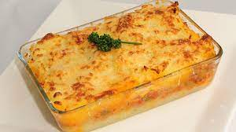

Pastel de Papa - Shepperds's Pie

Description
"Pastel de Papa" is one of the most traditional Argentine dishes.
It is made from meat and potatoes, with different layers. They can go
cheese, cinammon, sugar, hell even meringue
Ingredients
- Meat
- Potatoes
- Sugar
- Spice
Steps
- Cook the potatoes and smash 'em.
- Then cook the ground meat.
- Put meat down, then potato on top.
- Finish cooking everything!